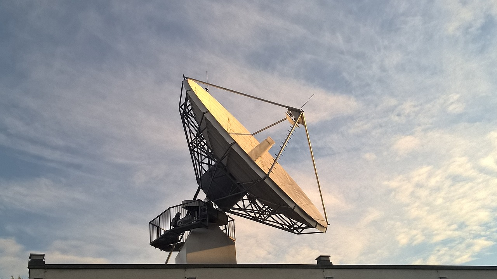

Suelen utilizarse antenas parabólicas. Para conexionas a larga distancia, se utilizan conexiones intermedias punto a punto entre antenas parabólicas.
Se suelen utilizar en sustitución del cable coaxial o las fibras ópticas ya que se necesitan menos repetidores y amplificadores, aunque se necesitan antenas alineadas. Se usan para transmisión de televisión y voz.

Ventajas
Es una alternativa barata en aquellos lugares donde el cable no puede instalar fácilmente como distancia grandes
tienen la característica principal de transmisión de televisión y voz.
se utilizan en sustitución del cable coaxial o las fibras ópticas ya que se necesitan menos repetidores y amplificadores.
Tienen frecuencias muy altas (1 y 300 GHz).
Desventajas
No es práctico cuando se necesitan velocidades de comunicación elevadas.
Es caro de instalar y de mantener
Está sujeto a interferencias provocadas por el mal tiempo, electromagnéticas y las condiciones atmosféricas.